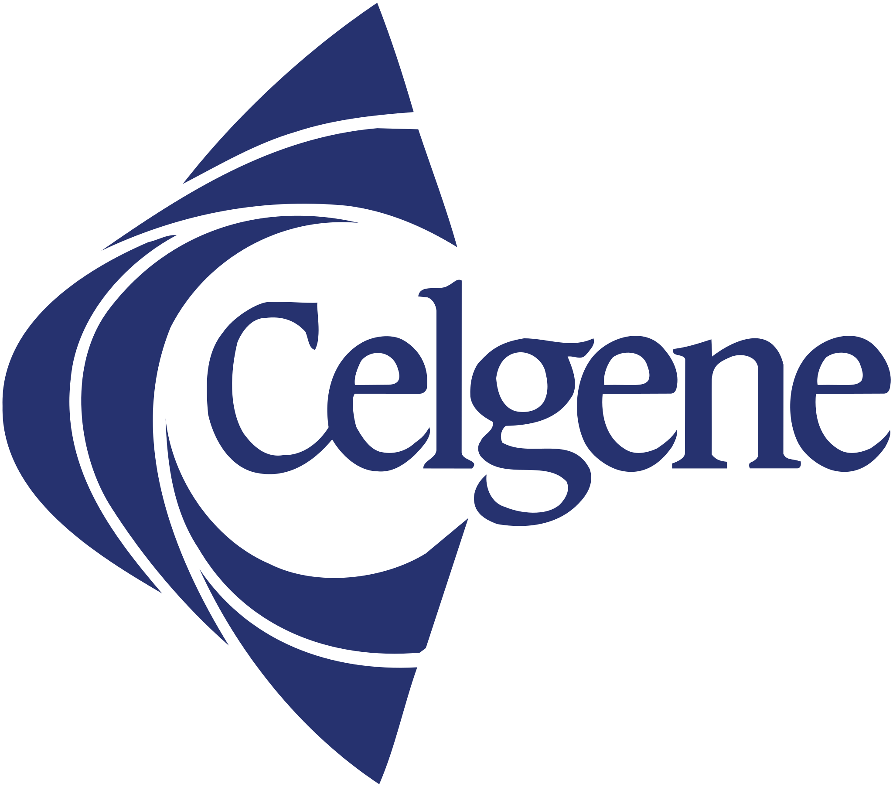

Preparedness
Runbooks, change control, validation
Disciplined execution with clear milestones, approvals, and rollback planning.
See our approachTrusted for high-stakes IT
Enterprise-grade IT services designed for uptime, security, and flawless execution — across offices, infrastructure moves, and ongoing operations.

Preparedness
Disciplined execution with clear milestones, approvals, and rollback planning.
See our approachSecurity-first
Least privilege, secure handling, and measured controls at every stage.
View complianceMeasured
Transparent performance reporting with SLA governance and continuous improvement.
See proofFeatured
Highlight a feature like “UBS Family Office Quarterly” (placeholder) to reinforce credibility with decision-makers.
Read the featureBuilt to support complex environments — from ongoing operations to high-risk moves and cutovers.
Monitoring, security, and support designed for uptime and accountability.
DiscoverDisciplined delivery with clear milestones, risk tracking, and change control.
DiscoverMoves and cutovers executed with minimal disruption and full validation.
DiscoverEndpoint, network, and infrastructure improvements built for reliability.
DiscoverTrusted outcomes built on verified execution, not promises.
How we keep you ready
A repeatable model designed for environments where failure isn’t acceptable.
Replace placeholders with real partner logos when available.



Proof
Show response times, SLA adherence, security posture, and delivery outcomes — with clarity.
View case studiesOnly one item opens at a time. Keyboard accessible.
Schedule a readiness review and we’ll map a plan that fits your environment.
Schedule a Readiness Review